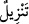
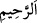

verilecektir.” (el-En’âm 60/160) buyrulmuştur.
Kâşifî der ki: “Allah’ın ism-i a‘zamı mukatta’ harflerinde gizlidir ve onu çıkarmaya
herkesin gücü yetmez.” Kemal Hoçendî (k.s.) der ki:
“Ey sûfî, harflerin ilmini bilmek arzusundaysan;
Güzel işler yap, yoksa sadece esmâ okumakta ne fayda var?”
2. (Kur’an) Rahmân ve Rahîm’in katından indirilmedir.
“…İndirilme” anlamına gelen (
) ifâdesi, haberin akabinde gelen ikinci bir
haberdir ve (
)“indirilmiştir” mânâsındadır. Zîrâ mef’ullerin masdar formu ile
anlatılması meşhur bir mecaz üslûbudur. Bu tıpkı “Bu para devlet başkanının
darb/bastığıdır”,
denildiğinde
“madrûbu”
yani
“bastırdığı”dır
anlamının
kasdedilmesine benzer. Sûrenin “indirilmiş” olmasının mânâsı şudur: Allah Teâlâ
sûreyi Levh-i Mahfuz’a yazmış ve Cebrâil (a.s.)’a o kelimeleri oradan alıp koruması
altında Hz. Peygamber’e indirmesini ve ona tam olarak teslim etmesini emretmiştir. İşte,
bu kelimelerin Peygamber’e kavratılması Cebrâil (a.s.) vâsıtasıyla olduğu içindir ki bu
kavratış “indirme” kelimesiyle karşılanmıştır. Yoksa Allah’ın zâtıyla kàim bulunan
kelâm-ı nefsî için bir yüksekten aşağı doğru “hareket etme”den ve “iniş”ten söz
edilemez.
“Rahmân ve Rahîm’in katından…”
Bu ifâde, “indirilmedir”e bağlı olup (
) lafzındaki tenvinin verdiği zâtî ağırlığı, bir
de Allah’a izâfetinin getirdiği ağırlığı ekleyerek pekiştirmektedir. İndirme fiilinin
Rahman ve Rahîm’e isnâd edilmesi, Kur’an’ın hem dinî-dünyevî maslahatların
sağlayıcısı olduğunu hem de rabbânî rahmetin gereği olduğunu haykırma amacına
mâtuftur. Çünkü önde gelen sıfatı merhamet olan bir zattan indirilen bir şeyin, her türlü
maslahatın sağlayıcısı olması kaçınılmazdır.
Kâşifî der ki: (
) yani; “Bağışlayıcı Allah’ın avâmın nefislerini hidâyet etmesi,
(
) ise merhamet sahibi Allah’ın hâs kullarının kalplerini gözetmesidir.”
et-Te’vîlâtü’n-Necmiyye’de şöyle der: “Hâ Mîm”in ‘Hâ’sı ile ilâhî hikmete, ‘Mîm’i
ile de ilâhi minnete işaret edilmekte olup mânâ şöyledir: O, merhameti öfkesinden önce
geldiği için ebedî “Rahîm”in -‘rahmeti herşeyi ebediyete kadar kaplayacak olan’-
rahmâniyyet vasfıyla bütün yaratıkları yaratan ezelî “Rahmân”dan böyle bir hikmet
indirmekle kullarına büyük bir minnette bulunmuş oldu ki söz konusu hikmet işte bu
kitaptır.
Âriflerden biri şöyle der: Rahmet denizi taşıp akınca bütün zelleler kaybolup gider.